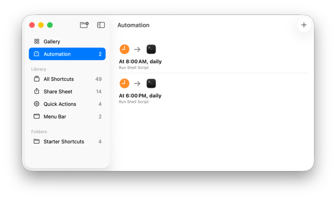
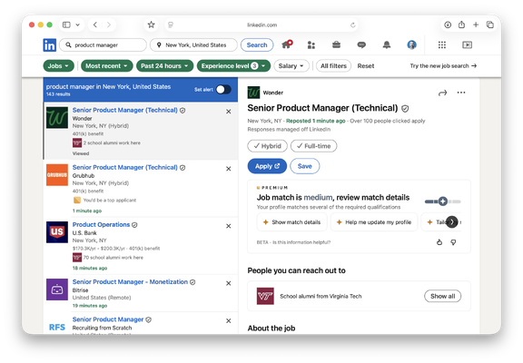
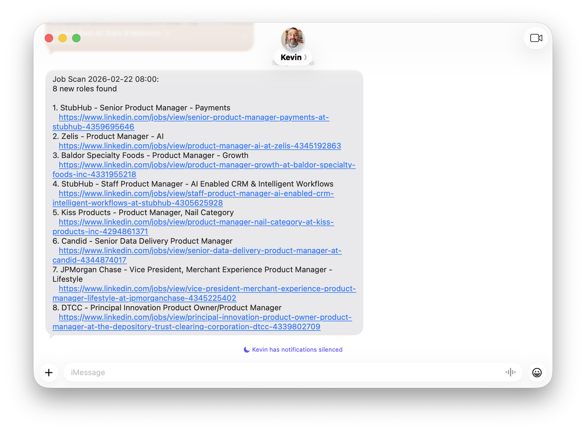
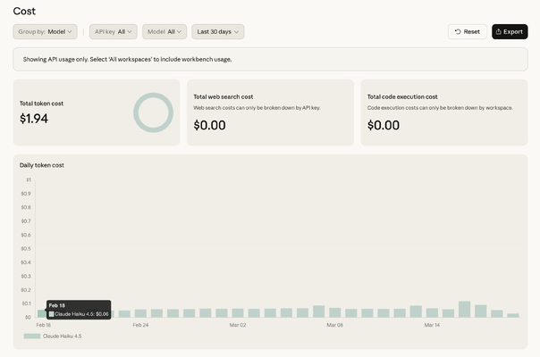

This is Part 1 of a series on Building with AI.
Most job seekers refresh LinkedIn like it's a slot machine. Open the app, scroll, scroll, scroll, close the app, feel vaguely bad about it. Repeat three hours later.
I decided to stop doing that.
Instead, I built a system that scans LinkedIn twice a day, filters for roles that match my profile, and texts me the results. Just a text that says "here are 4 new PM roles" or "nothing new, scan ran clean." No refreshing. No doom-scrolling. And after a few weeks of optimizing, it costs $0/month to run.
Here's how it works, what I learned testing five different AI models, and a prompt you can copy to try this yourself in 5 minutes.
The Problem
Postings fill fast. A role that goes up at 9am might have 200 applicants by 5pm. If you're only checking once a day, you're already behind.
A friend of mine manually checks LinkedIn three times a day on a schedule. He inspired me to automate this, because the thought of doing that manually wasn't something that exactly thrilled me.
How It Works
My Mac Mini runs a script twice a day (8am and 6pm). The whole pipeline: the Mac Mini fires on schedule, curl fetches LinkedIn with a 12-hour time filter, Python strips the HTML and extracts the job data, an AI model classifies each role as INCLUDE or EXCLUDE, and a bridge server hands the results to Apple Shortcuts, which texts me over iMessage. (That last hop is a pattern from u/ai_brews on r/mac.)
New roles get saved to a file. If there's nothing new, it still texts me so I know it ran. Silence means something broke.
One gotcha: LinkedIn doesn't offer an API for job search, so the script uses curl with a valid LinkedIn login cookie. That cookie expires periodically, so you need to refresh it by grabbing a new one from your browser every few weeks. The script also checks whether LinkedIn returned a logged-out page, so if the cookie goes stale, the scan tells me instead of silently returning garbage data.
The key ingredient is a LinkedIn URL trick most people don't know about. LinkedIn's search URL accepts a parameter called f_TPR that filters by time posted, in seconds. f_TPR=r43200 means "posted in the last 12 hours." Two scans a day with a 12-hour window gives full 24-hour coverage:
You can customize the keywords, location, and experience level for any role. The f_TPR parameter is the magic.



Getting the Cost to Zero
The first version of this system used an expensive AI model and sent it roughly 300KB of data per scan: raw HTML, navigation junk, CSS, historical notes the scan didn't need. It worked, but it burned through API credits.
After a few rounds of cutting, I got each scan down to about 20KB of actual job data and switched to Anthropic's smallest model, Haiku. Cost went from dollars per day to about six cents. Not six cents per scan. Six cents per day.
But I wanted to see if I could get it to zero.
The Model Experiment
I installed Ollama, which runs open-source AI models locally, and tested five models on the same LinkedIn scan.
- Qwen 2.5 14B timed out. Too large for my hardware.
- Qwen 2.5 7B worked, but the one role it found was a coding bootcamp posting. It could follow the output format but couldn't tell the difference between "Product Manager" and "not a Product Manager."
- Gemma 2 9B completely ignored the instructions and gave me career coaching advice. I asked it to be a filter and it decided to be a life coach.
- Llama 3.1 8B followed the format perfectly but excluded every single job, including legitimate roles at companies I'd never applied to. The reason for every exclusion? "Skip list." It couldn't distinguish between "this company is hard-blocked" and "exclude for a different reason." Right format, wrong answers.
- Mistral 7B had the opposite problem. It included everything with "Manager" in the title. Accountants. Catering supervisors. Sweater sales reps.
The pattern: small models can follow a structured output format, but they can't do nuanced classification. My filter has real exceptions (ML PM roles are excluded, but AI tooling PM roles are fine; banks are good, but trading product PM roles are not). That's too much reasoning for a 7B model. I uninstalled Ollama and got 25GB of disk space back.
Then I tried Gemini. Google's Gemini Flash has a free API tier. Not "free trial" free. Free as in no billing required. The first test: it correctly classified every single job. Accurate exclusion reasons. Not one mistake.
So now I'm running both side by side: Haiku at six cents a day, Gemini at zero. Both produce accurate results. The whole system costs less per month than a single cup of coffee, and half of it is literally free.

What Broke Along the Way
I want to be honest: I didn't know how to fix any of these. I'm a product manager, not a systems engineer. Claude (Anthropic's AI assistant) walked me through every one, and actually wrote all of the code.
Claude diagnosed its own auth problem. Claude Code uses OAuth through the macOS Keychain, which requires a UI. That doesn't exist at 8am when nobody's at the computer. Claude figured out its own authentication mechanism was the problem and told me to create an API key instead. There's something funny about an AI diagnosing why it can't authenticate itself.
Local models hallucinated URLs. The Ollama models fabricated LinkedIn job URLs. Completely made-up sequential IDs that looked real but went nowhere. The fix was architectural: Python extracts the real URLs, the model only decides INCLUDE or EXCLUDE by job number, and the model never touches a URL. This made the whole pipeline more reliable regardless of which model does the filtering.
Silent failures everywhere. Most of the problems I hit produced zero error output. The automation just... didn't run, or ran and produced garbage. The single best decision was making the scan text me even when there are no new roles. If I don't get a text, I know something broke.
Try It Yourself
You don't need a Mac Mini or any code. Here's a prompt you can paste into Claude (or any AI assistant) right now:
Five minutes. If you want the full automated setup or the bridge server code, drop a comment or DM me.
Next in the series: I Paid to Scrub My Data From Hundreds of Data Brokers. Then I Sent Even More to an AI..
Kevin Middleton is a Full Stack Product Manager who builds systems that help product teams not lose their minds. Currently looking for his next role in NYC. More at middleton.io and middleton.io/officehours.